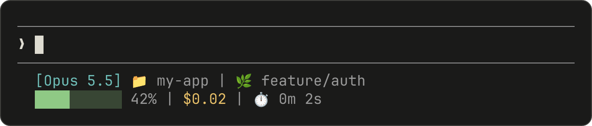
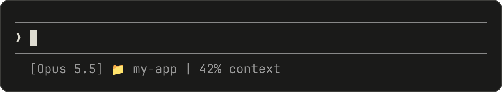
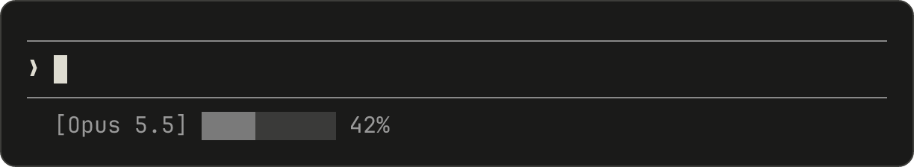
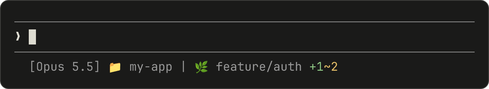
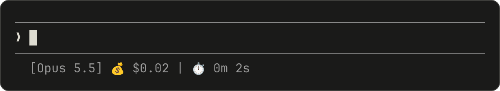
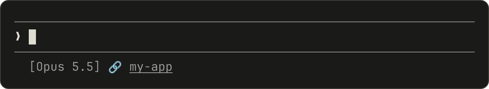

自定义你的状态行
配置自定义状态栏以监控 Claude Code 中的上下文窗口使用情况、成本和 git 状态
状态行是 Claude Code 底部的可自定义栏，可以运行你配置的任何 shell 脚本。它通过 stdin 接收 JSON 会话数据，并显示你的脚本打印的任何内容，为你提供一个持久的、一目了然的上下文使用情况、成本、git 状态或任何其他你想跟踪的内容的视图。
状态行在以下情况下很有用：
- 你想在工作时监控上下文窗口使用情况
- 你需要跟踪会话成本
- 你在多个会话中工作，需要区分它们
- 你希望 git 分支和状态始终可见
状态行在其自己的行中呈现，位于内置页脚徽章上方，不会替换它们。配置自定义状态行后，Claude Code 会停止显示页脚中的大多数键盘提示，包括 esc to interrupt、? for shortcuts 回退和 hold space to speak 语音听写提示。要在对话中出现 ID 时向页脚添加可点击的链接徽章，而无需编写脚本，请改为配置 footerLinksRegexes。
这是一个多行状态行的示例，它在第一行显示 git 信息，在第二行显示颜色编码的上下文栏。

本页面介绍了设置基本状态行，解释了数据如何从 Claude Code 流向你的脚本，列出了你可以显示的所有字段，并提供了常见模式的现成示例，如 git 状态、成本跟踪和进度条。
设置状态行
使用/statusline 命令让 Claude Code 为你生成脚本，或手动创建脚本并将其添加到你的设置中。
使用 /statusline 命令
/statusline 命令接受描述你想显示的内容的自然语言指令。Claude Code 在 ~/.claude/ 中生成脚本文件并自动更新你的设置：
/statusline show model name and context percentage with a progress bar
如果 Claude Code 在设置过程中要求权限，请批准文件编辑提示。
手动配置状态行
将 statusLine 字段添加到你的用户设置（~/.claude/settings.json，其中 ~ 是你的主目录）或项目设置。将 type 设置为 "command" 并将 command 指向脚本路径或内联 shell 命令。有关创建脚本的完整演练，请参阅逐步构建状态行。
{
"statusLine": {
"type": "command",
"command": "~/.claude/statusline.sh",
"padding": 2
}
}
command 字段在 shell 中运行，所以你也可以使用内联命令而不是脚本文件。此示例使用 jq 解析 JSON 输入并显示模型名称和上下文百分比：
{
"statusLine": {
"type": "command",
"command": "jq -r '\"[\\(.model.display_name)] \\(.context_window.used_percentage // 0)% context\"'"
}
}
可选的 padding 字段为状态行内容添加额外的水平间距（以字符为单位）。默认为 0。此填充是在界面的内置间距之外的，所以它控制相对缩进而不是距离终端边缘的绝对距离。
可选的 refreshInterval 字段除了事件驱动的更新外，每 N 秒重新运行一次你的命令。最小值为 1。当你的状态行显示基于时间的数据（如时钟）或后台子代理在主会话空闲时更改 git 状态时，设置此选项。如果不设置，则仅在事件上运行。
可选的 hideVimModeIndicator 字段会抑制提示符下方的内置 -- INSERT -- 文本。当你的脚本自己呈现 vim.mode 时，将此设置为 true，这样模式就不会显示两次。
禁用状态行
运行 /statusline 并要求它删除或清除你的状态行（例如，/statusline delete、/statusline clear、/statusline remove it）。你也可以手动从 settings.json 中删除 statusLine 字段。
逐步构建状态行
本演练展示了 /statusline 为你设置的内容，通过手动创建显示当前模型、工作目录和上下文窗口使用百分比的状态行。
使用/statusline和你想要的内容的描述会自动为你配置所有这些。
这些示例使用 Bash 脚本，在 macOS 和 Linux 上工作。在 Windows 上，请参阅Windows 配置了解 PowerShell 和 Git Bash 示例。

1. 创建一个读取 JSON 并打印输出的脚本
Claude Code 通过 stdin 向你的脚本发送 JSON 数据。此脚本使用 jq，一个你可能需要安装的命令行 JSON 解析器，来提取模型名称、目录和上下文百分比，然后打印格式化的行。
将其保存到 ~/.claude/statusline.sh（其中 ~ 是你的主目录，例如 macOS 上的 /Users/username 或 Linux 上的 /home/username）：
#!/bin/bash
# Read JSON data that Claude Code sends to stdin
input=$(cat)
# Extract fields using jq
MODEL=$(echo "$input" | jq -r '.model.display_name')
DIR=$(echo "$input" | jq -r '.workspace.current_dir')
# The "// 0" provides a fallback if the field is null
PCT=$(echo "$input" | jq -r '.context_window.used_percentage // 0' | cut -d. -f1)
# Output the status line - ${DIR##*/} extracts just the folder name
echo "[$MODEL] 📁 ${DIR##*/} | ${PCT}% context"
2. 使其可执行
将脚本标记为可执行，以便你的 shell 可以运行它：
chmod +x ~/.claude/statusline.sh
3. 添加到设置
告诉 Claude Code 运行你的脚本作为状态行。将此配置添加到 ~/.claude/settings.json，它将 type 设置为 "command"（意思是"运行此 shell 命令"）并将 command 指向你的脚本：
{
"statusLine": {
"type": "command",
"command": "~/.claude/statusline.sh"
}
}
你的状态行出现在界面的底部。Claude Code 会自动重新加载设置，并在你保存文件后立即运行你的脚本。
状态栏如何工作
Claude Code 运行您的脚本，通过 stdin 向其传输 JSON 会话数据，并显示脚本打印到 stdout 的任何内容。
状态栏在本地运行，不消耗 API token。在某些 UI 交互期间，它会临时隐藏，包括帮助菜单和权限提示。
状态栏何时更新
脚本在会话启动时运行一次，包括恢复会话时。之后，它在以下情况下再次运行：
- 新的助手消息到达
/compact完成- 权限模式更改
- Vim 模式切换
- 您在
statusLine设置中更改command - 如果您设置了
refreshInterval，其计时器到期 - 脚本最后接收的数据中的速率限制窗口到达其
resets_at时间 - 脚本最后接收的数据中的预热提示词缓存到达其
expires_at时间
Claude Code 以 300ms 对更新进行防抖，因此快速更改会批处理在一起，脚本在更改停止后运行一次。对 command 本身的更改会跳过防抖：Claude Code 立即运行新命令。如果在脚本仍在运行时触发新的更新，Claude Code 会取消正在进行的脚本。如果您编辑了脚本，更改会在下次更新触发重新运行它时出现。
当主会话空闲时，事件驱动的触发器可能会停止触发，例如当协调器等待后台子代理时。为了在空闲期间保持基于时间或外部来源的片段为最新状态，请设置 refreshInterval，以便同时按固定计时器重新运行命令。
脚本可以输出什么
脚本可以打印的不仅仅是单行纯文本：
- 多行：每个
echo或print语句显示为单独的行。请参阅多行示例。 - 颜色：使用 ANSI 转义码，如
\033[32m表示绿色（终端必须支持它们）。请参阅 git 状态示例。 - 链接：使用 OSC 8 转义序列 使文本可点击（macOS 上为 Cmd+click，Windows/Linux 上为 Ctrl+click）。需要支持超链接的终端，如 iTerm2、Kitty 或 WezTerm。请参阅可点击链接示例。
调整输出大小以适应终端
Claude Code 捕获脚本的输出而不是直接将其连接到终端，因此 tput cols 和语言级宽度检测无法从脚本内部读取终端大小。请改为读取 COLUMNS 和 LINES 环境变量。Claude Code 在运行脚本之前会将这些变量设置为当前终端尺寸。
可用数据
Claude Code 通过 stdin 向您的脚本发送以下 JSON 字段：
| 字段 | 描述 |
|---|---|
model.id、model.display_name |
当前模型标识符和显示名称 |
cwd、workspace.current_dir |
当前工作目录。两个字段包含相同的值；建议使用 workspace.current_dir，以便与 workspace.project_dir 保持一致。 |
workspace.project_dir |
启动 Claude Code 时所在的目录，如果会话期间工作目录发生变化，该值可能与 cwd 不同 |
workspace.added_dirs |
通过 /add-dir 或 --add-dir 添加的其他目录。如果未添加任何目录，则为空数组 |
workspace.git_worktree |
当前目录位于通过 git worktree add 创建的链接 worktree 中时的 Git worktree 名称。在主工作树中不存在。该字段对任何 git worktree 都会填充，这与 worktree.* 不同，后者仅在会话处于 worktree 会话时存在 |
workspace.repo.host、workspace.repo.owner、workspace.repo.name |
从 origin 远程解析出的仓库标识，例如 "github.com"、"anthropics"、"claude-code"。在 git 仓库之外或未配置 origin 远程时不存在。对于嵌套在子组中的 gitlab.com 项目，owner 是带斜杠的完整命名空间路径，例如 "group/subgroup"。在 v2.1.260 之前，这些项目不存在 workspace.repo |
cost.total_cost_usd |
以美元计的预估会话费用，除非有 modelPricing 表生效，否则在客户端按标价计算。可能与您的实际账单不同。当 /clear 开始新会话时重置为 \$0 |
cost.total_duration_ms |
会话已运行的总挂钟时间，以毫秒为单位。该值在多次恢复会话之间累计，且不包括会话未运行期间的时间 |
cost.total_api_duration_ms |
等待 API 响应所花费的总时间，以毫秒为单位 |
cost.total_lines_added、cost.total_lines_removed |
更改的代码行数 |
context_window.total_input_tokens、context_window.total_output_tokens |
当前上下文窗口中的 token 数，来自最近一次 API 响应。输入包括缓存读取和写入 |
context_window.context_window_size |
最大上下文窗口大小（以 token 为单位）。默认为 200000，对于具有扩展上下文的模型为 1000000。 |
context_window.used_percentage |
预先计算的上下文窗口已用百分比 |
context_window.remaining_percentage |
预先计算的上下文窗口剩余百分比 |
context_window.current_usage |
上一次 API 调用的 token 数，详见上下文窗口字段 |
exceeds_200k_tokens |
最近一次 API 响应的 token 总数（输入、缓存和输出 token 之和）是否超过 200k。这是一个固定阈值，与实际上下文窗口大小无关。 |
fast_mode |
会话是否启用了快速模式 |
effort.level |
为会话设置的推理 effort 级别（low、medium、high、xhigh 或 max），而不是由 skill、子代理或 ultrathink 设置的级别。如果您设置了模型不支持的级别，此处显示 Claude Code 实际运行时使用的级别。您更改的级别即使在生效之前也会显示在此处。如果在 CLAUDE_CODE_EFFORT_LEVEL 中设置了级别，此处显示该级别。当前模型不支持 effort 参数时不存在 |
thinking.enabled |
会话是否启用了扩展思考 |
rate_limits.five_hour.used_percentage、rate_limits.seven_day.used_percentage |
5 小时或 7 天速率限制的已用百分比，范围为 0 到 100 |
rate_limits.five_hour.resets_at、rate_limits.seven_day.resets_at |
5 小时或 7 天速率限制窗口重置的时间（Unix 纪元秒） |
rate_limits.spend_limit.used_percentage、rate_limits.spend_limit.resets_at |
在 Claude apps 网关后方时，您已使用的支出限额比例及其周期重置时间。请参阅支出限额字段。需要 Claude Code v2.1.251 或更高版本 |
rate_limits.spend_limit.used_usd、rate_limits.spend_limit.limit_usd、rate_limits.spend_limit.period |
以美元计的预估支出和限额，以及限额的周期。这些字段可能不存在。请参阅支出限额字段。Claude Code 和网关均需 v2.1.284 或更高版本 |
prompt_cache |
会话主对话的提示缓存统计信息：命中率、未命中次数以及缓存是否处于热状态。有关所有字段，请参阅提示缓存字段。在主对话的第一次 API 响应之前不存在。需要 Claude Code v2.1.251 或更高版本 |
session_id |
唯一会话标识符 |
session_name |
会话名称。如果存在通过 --name 标志或 /rename 设置的自定义名称，则使用该名称，否则使用 AI 生成的会话标题。默认显示名称（例如 my-app-3f）不会填充此字段。当会话既没有自定义名称也没有 AI 生成的标题时不存在 |
prompt_id |
标识当前正在处理的用户提示词的 UUID。与 OpenTelemetry 事件上的 prompt.id 属性相匹配。在第一次用户输入之前不存在 |
transcript_path |
对话会话记录文件的路径 |
version |
Claude Code 版本 |
output_style.name |
当前输出样式的名称 |
vim.mode |
启用 vim 模式时的当前 vim 模式（NORMAL、INSERT、VISUAL 或 VISUAL LINE） |
agent.name |
使用 --agent 标志运行或配置了 Agent 设置时的 Agent 名称 |
pr.number、pr.url |
当前分支的已打开 Pull Request。与页脚中的 PR 徽章一致。在具有 GitLab 远程的仓库中，Claude Code 会改用该分支已打开的 merge request 来填充这些字段，因此 pr.number 是 merge request 编号。merge request 数据需要 Claude Code v2.1.234 或更高版本。不在 git 仓库中时、在找到 Pull Request 或 merge request 之前，或者在其合并或关闭之后，此字段不存在 |
pr.review_state |
已打开 PR 的审查状态：approved、pending、changes_requested 或 draft。即使存在 pr，此字段也可能单独缺失 |
pr.kind |
当 pr 描述的是 GitLab merge request 时为 mr。对于 GitHub Pull Request 不存在，因此在此字段出现之前编写的脚本仍可正常工作。对于 merge request，当 GitLab 报告其可合并时，Claude Code 将 review_state 设置为 approved；任何其他打开状态设置为 pending；草稿设置为 draft。需要 Claude Code v2.1.234 或更高版本 |
worktree.name |
活动 worktree 的名称。仅在会话处于 worktree 会话时存在 |
worktree.path |
worktree 目录的绝对路径 |
worktree.branch |
worktree 的 Git 分支名称（例如 "worktree-my-feature"）。对于基于 hook 的 worktree 不存在 |
worktree.original_cwd |
Claude 进入 worktree 之前所在的目录 |
worktree.original_branch |
进入 worktree 之前检出的 Git 分支。对于基于 hook 的 worktree 不存在 |
[accordion] 完整 JSON schema
您的状态栏命令通过 stdin 接收以下 JSON 结构：
json theme={null} { "cwd": "/current/working/directory", "session_id": "abc123...", "session_name": "my-session", "prompt_id": "550e8400-e29b-41d4-a716-446655440000", "transcript_path": "/path/to/transcript.jsonl", "model": { "id": "claude-opus-5-5", "display_name": "Opus" }, "workspace": { "current_dir": "/current/working/directory", "project_dir": "/original/project/directory", "added_dirs": [], "git_worktree": "feature-xyz", "repo": { "host": "github.com", "owner": "anthropics", "name": "claude-code" } }, "version": "2.1.90", "output_style": { "name": "default" }, "cost": { "total_cost_usd": 0.01234, "total_duration_ms": 45000, "total_api_duration_ms": 2300, "total_lines_added": 156, "total_lines_removed": 23 }, "context_window": { "total_input_tokens": 15500, "total_output_tokens": 1200, "context_window_size": 200000, "used_percentage": 8, "remaining_percentage": 92, "current_usage": { "input_tokens": 8500, "output_tokens": 1200, "cache_creation_input_tokens": 5000, "cache_read_input_tokens": 2000 } }, "exceeds_200k_tokens": false, "prompt_cache": { "warm": true, "caching_observed": true, "ttl": "1h", "expires_at": 1738429200, "requests": 14, "misses": 2, "expected_rebuilds": 1, "hit_ratio": 0.91, "cache_write_tokens": 352000, "miss_recache_tokens": 310200, "last_miss_at": 1738425230, "last_miss_cause": { "causes": ["tools_changed"], "tools_added": 2, "tools_removed": 0 }, "miss_causes": { "tools_changed": 2 }, "recache_tokens_if_cold": 45000 }, "fast_mode": false, "effort": { "level": "high" }, "thinking": { "enabled": true }, "rate_limits": { "five_hour": { "used_percentage": 23.5, "resets_at": 1738425600 }, "seven_day": { "used_percentage": 41.2, "resets_at": 1738857600 }, "spend_limit": { "used_percentage": 62.8, "resets_at": 1740787200, "used_usd": 314.12, "limit_usd": 500, "period": "monthly" } }, "vim": { "mode": "NORMAL" }, "agent": { "name": "security-reviewer" }, "pr": { "number": 1234, "url": "https://github.com/anthropics/claude-code/pull/1234", "review_state": "pending" }, "worktree": { "name": "my-feature", "path": "/path/to/.claude/worktrees/my-feature", "branch": "worktree-my-feature", "original_cwd": "/path/to/project", "original_branch": "main" } }可能不存在的字段（不出现在 JSON 中）：
session_name：在通过--name或/rename设置了自定义名称时，或者存在 AI 生成的会话标题后出现。默认显示名称（例如my-app-3f）不会填充此字段prompt_id：仅在第一次用户输入之后出现workspace.git_worktree：仅当当前目录位于链接的 git worktree 中时出现workspace.repo：仅在配置了origin远程的 git 仓库中出现effort：仅当当前模型支持推理努力程度参数时出现vim：仅在启用 vim 模式时出现agent：仅在使用--agent标志运行或配置了 Agent 设置时出现pr：仅在为当前分支找到已打开的 PR 或 GitLab merge request 时出现，并在其合并或关闭后移除。pr.review_state和pr.kind可能单独缺失worktree：仅在会话处于 worktree 会话时出现。存在时，对于基于 hook 的 worktree，branch和original_branch也可能不存在rate_limits：仅对 claude.ai Pro、Max 和 Ultra 订阅用户，或在为您设置了支出限额的 Claude apps 网关后方时出现。即便如此，它也仅在会话中第一次 API 响应之后出现。每个窗口（five_hour、seven_day、spend_limit）都可能单独缺失，并且一旦某个窗口的resets_at时间已过，Claude Code 就会移除该窗口。使用jq -r '.rate_limits.five_hour.used_percentage // empty'可以妥善处理字段缺失的情况。prompt_cache：在主对话的第一次 API 响应之后出现。请参阅提示缓存字段可能为
null的字段：
context_window.current_usage：在会话中第一次 API 调用之前为null，在/compact之后也会再次为null，直到下一次 API 调用重新填充它context_window.used_percentage、context_window.remaining_percentage：在会话早期可能为null在脚本中，请使用条件访问处理缺失字段，并使用备用默认值处理 null 值。
上下文窗口字段
context_window 对象描述来自最近一次 API 响应的实时上下文窗口。
- 合计总数（
total_input_tokens、total_output_tokens）：当前上下文窗口中的 token。total_input_tokens是input_tokens、cache_creation_input_tokens和cache_read_input_tokens之和；total_output_tokens是最近一次响应的输出 token。在第一次 API 响应之前，两者均为0。 - 按组成部分的用量（
current_usage）：按类别拆分的相同 token 数。当您需要将缓存命中与新输入分开时，请使用此项。
current_usage 对象包含：
input_tokens：当前上下文中的输入 tokenoutput_tokens：生成的输出 tokencache_creation_input_tokens：写入缓存的 tokencache_read_input_tokens：从缓存读取的 token
有关缓存字段的含义及其计费方式，请参阅检查缓存性能。
used_percentage 字段仅根据输入 token 计算：input_tokens + cache_creation_input_tokens + cache_read_input_tokens。它不包括 output_tokens。
如果您根据 current_usage 手动计算上下文百分比，请使用相同的仅输入公式，以与 used_percentage 保持一致。
current_usage 对象在会话中第一次 API 调用之前为 null，并且在 /compact 之后会立即再次变为 null，直到下一次 API 调用重新填充它。
支出限额字段
在设有支出限额的 Claude apps 网关后方时，rate_limits.spend_limit 对象描述适用于您的支出限额。它在会话的第一次 API 响应之后出现，需要 Claude Code v2.1.251 或更高版本。您的脚本会按不同的时间安排接收其各个字段：
used_percentage和resets_at：随每次响应一起提供，因此只要存在spend_limit，它们就存在。used_percentage的范围为 0 到 100，超出限额后会高于 100；resets_at是限额周期重置的时间（Unix 纪元秒）。used_usd、limit_usd和period：以美元计的迄今预估支出和限额，以及限额所覆盖的周期，取值为daily、weekly或monthly之一。网关根据 token 数计算used_usd，因此它是一个估算值，而不是计费金额。Claude Code 通过单独的请求从网关读取这些字段，在您发送请求期间大约每五分钟读取一次。美元金额可能比used_percentage滞后约五分钟，因此两者可能短暂不一致。Claude Code 和网关均需 v2.1.284 或更高版本。
即使存在 spend_limit，也应将 used_usd、limit_usd 和 period 视为可选字段，因为您的脚本会先于它们收到百分比。请在脚本中为每个字段提供备用值进行读取，例如 jq -r '.rate_limits.spend_limit.used_usd // empty'。在 Claude Code v2.1.295 之前，如果您设置了 CLAUDE_CODE_DISABLE_NONESSENTIAL_TRAFFIC，这些字段会一直不存在，因为该设置会关闭那个请求。
提示缓存字段
prompt_cache 对象汇总了会话主对话使用提示缓存的情况。Claude Code 根据 API 响应中的缓存 token 数计算该对象，因此它适用于所有提供商。
该对象在主对话的第一次 API 响应之后出现。Claude Code 不会将子代理请求计入这些统计信息。需要 Claude Code v2.1.251 或更高版本。
下表列出了每个字段及其含义。时间戳为 Unix 纪元秒，与 rate_limits.*.resets_at 的单位相同。简短的状态栏通常只显示其中一两个字段；warm 和 hit_ratio 最直接地概括了缓存状态。
| 字段 | 描述 |
|---|---|
warm |
缓存的前缀是否仍在其 TTL 内。当最后一次响应未报告缓存 token 时为 false，即使 caching_observed 为 true 也是如此 |
caching_observed |
本次会话中是否有任何响应报告了缓存 token。false 表示提示缓存已关闭，或者您的提供商或网关不报告缓存信息 |
ttl |
当前缓存前缀的缓存生命周期："5m" 或 "1h" |
expires_at |
缓存前缀超出其 TTL 并变冷的时间，以纪元秒表示。当最后一次响应未报告缓存 token 时为 null |
requests |
本次会话中为主对话记录的 API 请求数 |
misses |
重新处理了缓存中已有内容的请求：超过该请求本可从缓存读取内容的 5% 且至少 2,000 个 token，并且没有压缩或工具结果清除可以解释缓存读取的不足 |
expected_rebuilds |
在压缩或清除旧工具结果之后发生的缓存重建次数 |
hit_ratio |
本次会话中缓存读取 token 占所有输入 token 的比例，范围为 0 到 1。分母包括缓存读取、缓存写入和未缓存的输入。当这些计数全部为零时为 null |
cache_write_tokens |
本次会话中写入缓存的所有 token，包括第一个请求的初始写入 |
miss_recache_tokens |
被计为未命中的请求写入缓存的 token |
last_miss_at |
最后一次未命中发生的时间，以纪元秒表示。当会话中没有未命中时为 null |
last_miss_cause |
Claude Code 判定的最后一次未命中的可能原因，详见最后一次未命中原因。需要 Claude Code v2.1.260 或更高版本 |
miss_causes |
本次会话中已诊断的未命中按各原因分别有多少次，键名与 last_miss_cause 中的原因名称相同。需要 Claude Code v2.1.260 或更高版本 |
recache_tokens_if_cold |
如果到下一个请求时缓存已变冷，该请求需要重新缓存的 token 数。在压缩或清除旧工具结果之后立即为 null，直到下一个请求记录重写后对话的大小 |
Claude Code 在终端中的 /usage 命令的 Prompt cache (main) 行上显示相同的统计信息。
最后一次未命中原因
last_miss_cause 对象报告 Claude Code 判定的最近一次未命中的可能原因。其 causes 数组包含一个或多个原因名称，例如 tools_changed、system_prompt_changed、ttl_expired_5m 或 likely_server_side。在会话第一次未命中之前，该对象为 null；每当 Claude Code 无法确定最近一次未命中的原因时，也会再次为 null。需要 Claude Code v2.1.260 或更高版本。
有两种原因会向该对象添加计数：
tools_added和tools_removed：与tools_changed一起出现，表示向请求中添加或从请求中移除的工具数量system_char_delta：与system_prompt_changed一起出现，表示系统提示词长度的变化，以字符为单位
示例
这些示例展示了常见的状态行模式。要使用任何示例：
- 将脚本保存到文件，如
~/.claude/statusline.sh（或.py/.js） - 使其可执行：
chmod +x ~/.claude/statusline.sh - 将路径添加到你的设置
Bash 示例使用 jq 来解析 JSON。Python 和 Node.js 具有内置的 JSON 解析。
上下文窗口使用情况
显示当前模型和上下文窗口使用情况，带有可视进度条。每个脚本从 stdin 读取 JSON，提取 used_percentage 字段，并构建一个 10 字符的栏，其中填充的块（▓）代表使用情况：

#!/bin/bash
# Read all of stdin into a variable
input=$(cat)
# Extract fields with jq, "// 0" provides fallback for null
MODEL=$(echo "$input" | jq -r '.model.display_name')
PCT=$(echo "$input" | jq -r '.context_window.used_percentage // 0' | cut -d. -f1)
# Build progress bar: printf -v creates a run of spaces, then
# ${var// /▓} replaces each space with a block character
BAR_WIDTH=10
FILLED=$((PCT * BAR_WIDTH / 100))
EMPTY=$((BAR_WIDTH - FILLED))
BAR=""
[ "$FILLED" -gt 0 ] && printf -v FILL "%${FILLED}s" && BAR="${FILL// /▓}"
[ "$EMPTY" -gt 0 ] && printf -v PAD "%${EMPTY}s" && BAR="${BAR}${PAD// /░}"
echo "[$MODEL] $BAR $PCT%"
#!/usr/bin/env python3
import json, sys
# json.load reads and parses stdin in one step
data = json.load(sys.stdin)
model = data['model']['display_name']
# "or 0" handles null values
pct = int(data.get('context_window', {}).get('used_percentage', 0) or 0)
# String multiplication builds the bar
filled = pct * 10 // 100
bar = '▓' * filled + '░' * (10 - filled)
print(f"[{model}] {bar} {pct}%")
#!/usr/bin/env node
// Node.js reads stdin asynchronously with events
let input = '';
process.stdin.on('data', chunk => input += chunk);
process.stdin.on('end', () => {
const data = JSON.parse(input);
const model = data.model.display_name;
// Optional chaining (?.) safely handles null fields
const pct = Math.floor(data.context_window?.used_percentage || 0);
// String.repeat() builds the bar
const filled = Math.floor(pct * 10 / 100);
const bar = '▓'.repeat(filled) + '░'.repeat(10 - filled);
console.log(`[${model}] ${bar} ${pct}%`);
});
Git 状态与颜色
显示 git 分支，带有暂存和修改文件的颜色编码指示器。此脚本使用ANSI 转义码表示终端颜色：\033[32m 是绿色，\033[33m 是黄色，\033[0m 重置为默认值。

每个脚本检查当前目录是否是 git 存储库，计算暂存和修改文件，并显示颜色编码的指示器：
#!/bin/bash
input=$(cat)
MODEL=$(echo "$input" | jq -r '.model.display_name')
DIR=$(echo "$input" | jq -r '.workspace.current_dir')
GREEN='\033[32m'
YELLOW='\033[33m'
RESET='\033[0m'
if git rev-parse --git-dir > /dev/null 2>&1; then
BRANCH=$(git branch --show-current 2>/dev/null)
STAGED=$(git diff --cached --numstat 2>/dev/null | wc -l | tr -d ' ')
MODIFIED=$(git diff --numstat 2>/dev/null | wc -l | tr -d ' ')
GIT_STATUS=""
[ "$STAGED" -gt 0 ] && GIT_STATUS="${GREEN}+${STAGED}${RESET}"
[ "$MODIFIED" -gt 0 ] && GIT_STATUS="${GIT_STATUS}${YELLOW}~${MODIFIED}${RESET}"
echo -e "[$MODEL] 📁 ${DIR##*/} | 🌿 $BRANCH $GIT_STATUS"
else
echo "[$MODEL] 📁 ${DIR##*/}"
fi
#!/usr/bin/env python3
import json, sys, subprocess, os
data = json.load(sys.stdin)
model = data['model']['display_name']
directory = os.path.basename(data['workspace']['current_dir'])
GREEN, YELLOW, RESET = '\033[32m', '\033[33m', '\033[0m'
try:
subprocess.check_output(['git', 'rev-parse', '--git-dir'], stderr=subprocess.DEVNULL)
branch = subprocess.check_output(['git', 'branch', '--show-current'], text=True).strip()
staged_output = subprocess.check_output(['git', 'diff', '--cached', '--numstat'], text=True).strip()
modified_output = subprocess.check_output(['git', 'diff', '--numstat'], text=True).strip()
staged = len(staged_output.split('\n')) if staged_output else 0
modified = len(modified_output.split('\n')) if modified_output else 0
git_status = f"{GREEN}+{staged}{RESET}" if staged else ""
git_status += f"{YELLOW}~{modified}{RESET}" if modified else ""
print(f"[{model}] 📁 {directory} | 🌿 {branch} {git_status}")
except:
print(f"[{model}] 📁 {directory}")
#!/usr/bin/env node
const { execSync } = require('child_process');
const path = require('path');
let input = '';
process.stdin.on('data', chunk => input += chunk);
process.stdin.on('end', () => {
const data = JSON.parse(input);
const model = data.model.display_name;
const dir = path.basename(data.workspace.current_dir);
const GREEN = '\x1b[32m', YELLOW = '\x1b[33m', RESET = '\x1b[0m';
try {
execSync('git rev-parse --git-dir', { stdio: 'ignore' });
const branch = execSync('git branch --show-current', { encoding: 'utf8' }).trim();
const staged = execSync('git diff --cached --numstat', { encoding: 'utf8' }).trim().split('\n').filter(Boolean).length;
const modified = execSync('git diff --numstat', { encoding: 'utf8' }).trim().split('\n').filter(Boolean).length;
let gitStatus = staged ? `${GREEN}+${staged}${RESET}` : '';
gitStatus += modified ? `${YELLOW}~${modified}${RESET}` : '';
console.log(`[${model}] 📁 ${dir} | 🌿 ${branch} ${gitStatus}`);
} catch {
console.log(`[${model}] 📁 ${dir}`);
}
});
成本和持续时间跟踪
跟踪你的会话的 API 成本和经过的时间。cost.total_cost_usd 字段累积当前会话中所有 API 调用的估计成本。cost.total_duration_ms 字段测量自会话开始以来的总经过时间，而 cost.total_api_duration_ms 仅跟踪等待 API 响应的时间。
每个脚本将成本格式化为货币并将毫秒转换为分钟和秒：

#!/bin/bash
input=$(cat)
MODEL=$(echo "$input" | jq -r '.model.display_name')
COST=$(echo "$input" | jq -r '.cost.total_cost_usd // 0')
DURATION_MS=$(echo "$input" | jq -r '.cost.total_duration_ms // 0')
COST_FMT=$(printf '$%.2f' "$COST")
DURATION_SEC=$((DURATION_MS / 1000))
MINS=$((DURATION_SEC / 60))
SECS=$((DURATION_SEC % 60))
echo "[$MODEL] 💰 $COST_FMT | ⏱️ ${MINS}m ${SECS}s"
#!/usr/bin/env python3
import json, sys
data = json.load(sys.stdin)
model = data['model']['display_name']
cost = data.get('cost', {}).get('total_cost_usd', 0) or 0
duration_ms = data.get('cost', {}).get('total_duration_ms', 0) or 0
duration_sec = duration_ms // 1000
mins, secs = duration_sec // 60, duration_sec % 60
print(f"[{model}] 💰 ${cost:.2f} | ⏱️ {mins}m {secs}s")
#!/usr/bin/env node
let input = '';
process.stdin.on('data', chunk => input += chunk);
process.stdin.on('end', () => {
const data = JSON.parse(input);
const model = data.model.display_name;
const cost = data.cost?.total_cost_usd || 0;
const durationMs = data.cost?.total_duration_ms || 0;
const durationSec = Math.floor(durationMs / 1000);
const mins = Math.floor(durationSec / 60);
const secs = durationSec % 60;
console.log(`[${model}] 💰 $${cost.toFixed(2)} | ⏱️ ${mins}m ${secs}s`);
});
显示多行
你的脚本可以输出多行来创建更丰富的显示。
此示例结合了几种技术：基于阈值的颜色（70% 以下为绿色，70-89% 为黄色，90%+ 为红色）、进度条和 git 分支信息。每个 print 或 echo 语句创建单独的行：
#!/bin/bash
input=$(cat)
MODEL=$(echo "$input" | jq -r '.model.display_name')
DIR=$(echo "$input" | jq -r '.workspace.current_dir')
COST=$(echo "$input" | jq -r '.cost.total_cost_usd // 0')
PCT=$(echo "$input" | jq -r '.context_window.used_percentage // 0' | cut -d. -f1)
DURATION_MS=$(echo "$input" | jq -r '.cost.total_duration_ms // 0')
CYAN='\033[36m'; GREEN='\033[32m'; YELLOW='\033[33m'; RED='\033[31m'; RESET='\033[0m'
# Pick bar color based on context usage
if [ "$PCT" -ge 90 ]; then BAR_COLOR="$RED"
elif [ "$PCT" -ge 70 ]; then BAR_COLOR="$YELLOW"
else BAR_COLOR="$GREEN"; fi
FILLED=$((PCT / 10)); EMPTY=$((10 - FILLED))
printf -v FILL "%${FILLED}s"; printf -v PAD "%${EMPTY}s"
BAR="${FILL// /█}${PAD// /░}"
MINS=$((DURATION_MS / 60000)); SECS=$(((DURATION_MS % 60000) / 1000))
BRANCH=""
git rev-parse --git-dir > /dev/null 2>&1 && BRANCH=" | 🌿 $(git branch --show-current 2>/dev/null)"
echo -e "${CYAN}[$MODEL]${RESET} 📁 ${DIR##*/}$BRANCH"
COST_FMT=$(printf '$%.2f' "$COST")
echo -e "${BAR_COLOR}${BAR}${RESET} ${PCT}% | ${YELLOW}${COST_FMT}${RESET} | ⏱️ ${MINS}m ${SECS}s"
#!/usr/bin/env python3
import json, sys, subprocess, os
data = json.load(sys.stdin)
model = data['model']['display_name']
directory = os.path.basename(data['workspace']['current_dir'])
cost = data.get('cost', {}).get('total_cost_usd', 0) or 0
pct = int(data.get('context_window', {}).get('used_percentage', 0) or 0)
duration_ms = data.get('cost', {}).get('total_duration_ms', 0) or 0
CYAN, GREEN, YELLOW, RED, RESET = '\033[36m', '\033[32m', '\033[33m', '\033[31m', '\033[0m'
bar_color = RED if pct >= 90 else YELLOW if pct >= 70 else GREEN
filled = pct // 10
bar = '█' * filled + '░' * (10 - filled)
mins, secs = duration_ms // 60000, (duration_ms % 60000) // 1000
try:
branch = subprocess.check_output(['git', 'branch', '--show-current'], text=True, stderr=subprocess.DEVNULL).strip()
branch = f" | 🌿 {branch}" if branch else ""
except:
branch = ""
print(f"{CYAN}[{model}]{RESET} 📁 {directory}{branch}")
print(f"{bar_color}{bar}{RESET} {pct}% | {YELLOW}${cost:.2f}{RESET} | ⏱️ {mins}m {secs}s")
#!/usr/bin/env node
const { execSync } = require('child_process');
const path = require('path');
let input = '';
process.stdin.on('data', chunk => input += chunk);
process.stdin.on('end', () => {
const data = JSON.parse(input);
const model = data.model.display_name;
const dir = path.basename(data.workspace.current_dir);
const cost = data.cost?.total_cost_usd || 0;
const pct = Math.floor(data.context_window?.used_percentage || 0);
const durationMs = data.cost?.total_duration_ms || 0;
const CYAN = '\x1b[36m', GREEN = '\x1b[32m', YELLOW = '\x1b[33m', RED = '\x1b[31m', RESET = '\x1b[0m';
const barColor = pct >= 90 ? RED : pct >= 70 ? YELLOW : GREEN;
const filled = Math.floor(pct / 10);
const bar = '█'.repeat(filled) + '░'.repeat(10 - filled);
const mins = Math.floor(durationMs / 60000);
const secs = Math.floor((durationMs % 60000) / 1000);
let branch = '';
try {
branch = execSync('git branch --show-current', { encoding: 'utf8', stdio: ['pipe', 'pipe', 'ignore'] }).trim();
branch = branch ? ` | 🌿 ${branch}` : '';
} catch {}
console.log(`${CYAN}[${model}]${RESET} 📁 ${dir}${branch}`);
console.log(`${barColor}${bar}${RESET} ${pct}% | ${YELLOW}$${cost.toFixed(2)}${RESET} | ⏱️ ${mins}m ${secs}s`);
});
可点击链接
此示例创建指向你的 GitHub 存储库的可点击链接。按住 Cmd（macOS）或 Ctrl（Windows/Linux）并单击以在浏览器中打开链接。

每个脚本获取 git 远程 URL，将 SSH 格式转换为 HTTPS，并将存储库名称包装在 OSC 8 转义码中。Bash 版本使用 printf '%b'，它比 echo -e 更可靠地跨不同 shell 解释反斜杠转义：
#!/bin/bash
input=$(cat)
MODEL=$(echo "$input" | jq -r '.model.display_name')
# Convert git SSH URL to HTTPS
REMOTE=$(git remote get-url origin 2>/dev/null | sed 's/git@github.com:/https:\/\/github.com\//' | sed 's/\.git$//')
if [ -n "$REMOTE" ]; then
REPO_NAME=$(basename "$REMOTE")
# OSC 8 format: \e]8;;URL\a then TEXT then \e]8;;\a
# printf %b interprets escape sequences reliably across shells
printf '%b' "[$MODEL] 🔗 \e]8;;${REMOTE}\a${REPO_NAME}\e]8;;\a\n"
else
echo "[$MODEL]"
fi
#!/usr/bin/env python3
import json, sys, subprocess, re, os
data = json.load(sys.stdin)
model = data['model']['display_name']
# Get git remote URL
try:
remote = subprocess.check_output(
['git', 'remote', 'get-url', 'origin'],
stderr=subprocess.DEVNULL, text=True
).strip()
# Convert SSH to HTTPS format
remote = re.sub(r'^git@github\.com:', 'https://github.com/', remote)
remote = re.sub(r'\.git$', '', remote)
repo_name = os.path.basename(remote)
# OSC 8 escape sequences
link = f"\033]8;;{remote}\a{repo_name}\033]8;;\a"
print(f"[{model}] 🔗 {link}")
except:
print(f"[{model}]")
#!/usr/bin/env node
const { execSync } = require('child_process');
const path = require('path');
let input = '';
process.stdin.on('data', chunk => input += chunk);
process.stdin.on('end', () => {
const data = JSON.parse(input);
const model = data.model.display_name;
try {
let remote = execSync('git remote get-url origin', { encoding: 'utf8', stdio: ['pipe', 'pipe', 'ignore'] }).trim();
// Convert SSH to HTTPS format
remote = remote.replace(/^git@github\.com:/, 'https://github.com/').replace(/\.git$/, '');
const repoName = path.basename(remote);
// OSC 8 escape sequences
const link = `\x1b]8;;${remote}\x07${repoName}\x1b]8;;\x07`;
console.log(`[${model}] 🔗 ${link}`);
} catch {
console.log(`[${model}]`);
}
});
速率限制使用情况
在状态栏中显示 claude.ai 订阅速率限制使用情况，或您相对于 Claude 应用网关支出限制的支出。对于订阅者，rate_limits 对象可以包含一个滚动的 five_hour 窗口和一个每周的 seven_day 窗口。每个窗口提供 used_percentage（从 0 到 100）和 resets_at（窗口重置时的 Unix 纪元秒数）。在网关后面时，请读取 spend_limit 对象，详见支出限制字段。
rate_limits 对象仅对 claude.ai Pro、Max 和 Ultra 订阅者或具有支出限制的 Claude 应用网关后面的用户出现，并且仅在第一次 API 响应后出现。每个脚本都会优雅地处理缺失的字段，并且在网关后面时打印 spend: $314.12 / $500，或在美元字段缺失时打印 spend: 63%：
#!/bin/bash
input=$(cat)
MODEL=$(echo "$input" | jq -r '.model.display_name')
# "// empty" produces no output when rate_limits is absent
FIVE_H=$(echo "$input" | jq -r '.rate_limits.five_hour.used_percentage // empty')
WEEK=$(echo "$input" | jq -r '.rate_limits.seven_day.used_percentage // empty')
LIMITS=""
[ -n "$FIVE_H" ] && LIMITS="5h: $(printf '%.0f' "$FIVE_H")%"
[ -n "$WEEK" ] && LIMITS="${LIMITS:+$LIMITS }7d: $(printf '%.0f' "$WEEK")%"
# Behind a Claude apps gateway: dollars when the gateway reports them, else the percentage
SPEND_PCT=$(echo "$input" | jq -r '.rate_limits.spend_limit.used_percentage // empty')
SPEND_USD=$(echo "$input" | jq -r '.rate_limits.spend_limit | select(.used_usd != null) | "$\(.used_usd) / $\(.limit_usd)"')
[ -n "$SPEND_PCT" ] && LIMITS="${LIMITS:+$LIMITS }spend: ${SPEND_USD:-$(printf '%.0f' "$SPEND_PCT")%}"
[ -n "$LIMITS" ] && echo "[$MODEL] | $LIMITS" || echo "[$MODEL]"
#!/usr/bin/env python3
import json, sys
data = json.load(sys.stdin)
model = data['model']['display_name']
parts = []
rate = data.get('rate_limits', {})
five_h = rate.get('five_hour', {}).get('used_percentage')
week = rate.get('seven_day', {}).get('used_percentage')
if five_h is not None:
parts.append(f"5h: {five_h:.0f}%")
if week is not None:
parts.append(f"7d: {week:.0f}%")
# Behind a Claude apps gateway: dollars when the gateway reports them, else the percentage
spend = rate.get('spend_limit', {})
if spend.get('used_percentage') is not None:
if spend.get('used_usd') is not None:
parts.append(f"spend: ${spend['used_usd']} / ${spend['limit_usd']}")
else:
parts.append(f"spend: {spend['used_percentage']:.0f}%")
if parts:
print(f"[{model}] | {' '.join(parts)}")
else:
print(f"[{model}]")
#!/usr/bin/env node
let input = '';
process.stdin.on('data', chunk => input += chunk);
process.stdin.on('end', () => {
const data = JSON.parse(input);
const model = data.model.display_name;
const parts = [];
const fiveH = data.rate_limits?.five_hour?.used_percentage;
const week = data.rate_limits?.seven_day?.used_percentage;
if (fiveH != null) parts.push(`5h: ${Math.round(fiveH)}%`);
if (week != null) parts.push(`7d: ${Math.round(week)}%`);
// Behind a Claude apps gateway: dollars when the gateway reports them, else the percentage
const spend = data.rate_limits?.spend_limit;
if (spend?.used_percentage != null) {
parts.push(spend.used_usd != null
? `spend: $${spend.used_usd} / $${spend.limit_usd}`
: `spend: ${Math.round(spend.used_percentage)}%`);
}
console.log(parts.length ? `[${model}] | ${parts.join(' ')}` : `[${model}]`);
});
缓存昂贵的操作
你的状态行脚本在活跃会话期间频繁运行。像 git status 或 git diff 这样的命令可能很慢，特别是在大型存储库中。此示例将 git 信息缓存到临时文件，并仅每 5 秒刷新一次。
缓存文件名需要在会话内的状态行调用中保持稳定，但在会话之间是唯一的，以便不同存储库中的并发会话不会读取彼此的缓存 git 状态。基于进程的标识符如 $$、os.getpid() 或 process.pid 在每次调用时都会改变，会破坏缓存。改用 JSON 输入中的 session_id：它在会话的生命周期内是稳定的，并且对每个会话是唯一的。
每个脚本在运行 git 命令之前检查缓存文件是否缺失或早于 5 秒：
#!/bin/bash
input=$(cat)
MODEL=$(echo "$input" | jq -r '.model.display_name')
DIR=$(echo "$input" | jq -r '.workspace.current_dir')
SESSION_ID=$(echo "$input" | jq -r '.session_id')
CACHE_FILE="/tmp/statusline-git-cache-$SESSION_ID"
CACHE_MAX_AGE=5 # seconds
cache_is_stale() {
[ ! -f "$CACHE_FILE" ] || \
# stat -c %Y (Linux) or stat -f %m (macOS) prints the file's last-modified
# time. The Linux form must run first: on Linux, the macOS form prints a
# filesystem report to stdout before failing, and that output would be
# captured by the command substitution and break the arithmetic.
[ $(($(date +%s) - $(stat -c %Y "$CACHE_FILE" 2>/dev/null || stat -f %m "$CACHE_FILE" 2>/dev/null || echo 0))) -gt $CACHE_MAX_AGE ]
}
if cache_is_stale; then
if git rev-parse --git-dir > /dev/null 2>&1; then
BRANCH=$(git branch --show-current 2>/dev/null)
STAGED=$(git diff --cached --numstat 2>/dev/null | wc -l | tr -d ' ')
MODIFIED=$(git diff --numstat 2>/dev/null | wc -l | tr -d ' ')
echo "$BRANCH|$STAGED|$MODIFIED" > "$CACHE_FILE"
else
echo "||" > "$CACHE_FILE"
fi
fi
IFS='|' read -r BRANCH STAGED MODIFIED < "$CACHE_FILE"
if [ -n "$BRANCH" ]; then
echo "[$MODEL] 📁 ${DIR##*/} | 🌿 $BRANCH +$STAGED ~$MODIFIED"
else
echo "[$MODEL] 📁 ${DIR##*/}"
fi
#!/usr/bin/env python3
import json, sys, subprocess, os, time
data = json.load(sys.stdin)
model = data['model']['display_name']
directory = os.path.basename(data['workspace']['current_dir'])
session_id = data['session_id']
CACHE_FILE = f"/tmp/statusline-git-cache-{session_id}"
CACHE_MAX_AGE = 5 # seconds
def cache_is_stale():
if not os.path.exists(CACHE_FILE):
return True
return time.time() - os.path.getmtime(CACHE_FILE) > CACHE_MAX_AGE
if cache_is_stale():
try:
subprocess.check_output(['git', 'rev-parse', '--git-dir'], stderr=subprocess.DEVNULL)
branch = subprocess.check_output(['git', 'branch', '--show-current'], text=True).strip()
staged = subprocess.check_output(['git', 'diff', '--cached', '--numstat'], text=True).strip()
modified = subprocess.check_output(['git', 'diff', '--numstat'], text=True).strip()
staged_count = len(staged.split('\n')) if staged else 0
modified_count = len(modified.split('\n')) if modified else 0
with open(CACHE_FILE, 'w') as f:
f.write(f"{branch}|{staged_count}|{modified_count}")
except:
with open(CACHE_FILE, 'w') as f:
f.write("||")
with open(CACHE_FILE) as f:
branch, staged, modified = f.read().strip().split('|')
if branch:
print(f"[{model}] 📁 {directory} | 🌿 {branch} +{staged} ~{modified}")
else:
print(f"[{model}] 📁 {directory}")
#!/usr/bin/env node
const { execSync } = require('child_process');
const fs = require('fs');
const path = require('path');
let input = '';
process.stdin.on('data', chunk => input += chunk);
process.stdin.on('end', () => {
const data = JSON.parse(input);
const model = data.model.display_name;
const dir = path.basename(data.workspace.current_dir);
const sessionId = data.session_id;
const CACHE_FILE = `/tmp/statusline-git-cache-${sessionId}`;
const CACHE_MAX_AGE = 5; // seconds
const cacheIsStale = () => {
if (!fs.existsSync(CACHE_FILE)) return true;
return (Date.now() / 1000) - fs.statSync(CACHE_FILE).mtimeMs / 1000 > CACHE_MAX_AGE;
};
if (cacheIsStale()) {
try {
execSync('git rev-parse --git-dir', { stdio: 'ignore' });
const branch = execSync('git branch --show-current', { encoding: 'utf8' }).trim();
const staged = execSync('git diff --cached --numstat', { encoding: 'utf8' }).trim().split('\n').filter(Boolean).length;
const modified = execSync('git diff --numstat', { encoding: 'utf8' }).trim().split('\n').filter(Boolean).length;
fs.writeFileSync(CACHE_FILE, `${branch}|${staged}|${modified}`);
} catch {
fs.writeFileSync(CACHE_FILE, '||');
}
}
const [branch, staged, modified] = fs.readFileSync(CACHE_FILE, 'utf8').trim().split('|');
if (branch) {
console.log(`[${model}] 📁 ${dir} | 🌿 ${branch} +${staged} ~${modified}`);
} else {
console.log(`[${model}] 📁 ${dir}`);
}
});
Windows 配置
在 Windows 上，Claude Code 通过 Git Bash 运行状态行命令（如果已安装 Git Bash），或在没有 Git Bash 时通过 PowerShell 运行。
Git Bash 将未引用的反斜杠视为转义字符，因此 Windows 风格的路径（如 C:\Users\username\script.mjs）到达脚本运行器时会删除其分隔符，命令会失败而没有可见的错误。在 command 字符串中使用正斜杠编写文件路径，如下面的示例所示。~ 快捷方式也有效，并扩展到你的 Windows 主目录。
要将 PowerShell 脚本作为状态行运行，请通过 powershell 调用它。无论 Claude Code 通过 Git Bash 还是 PowerShell 路由命令，这都有效：
{
"statusLine": {
"type": "command",
"command": "powershell -NoProfile -File C:/Users/username/.claude/statusline.ps1"
}
}
$input_json = $input | Out-String | ConvertFrom-Json
$cwd = $input_json.cwd
$model = $input_json.model.display_name
$used = $input_json.context_window.used_percentage
$dirname = Split-Path $cwd -Leaf
if ($used) {
Write-Host "$dirname [$model] ctx: $used%"
} else {
Write-Host "$dirname [$model]"
}
或者，当安装了 Git Bash 时，直接运行 Bash 脚本：
{
"statusLine": {
"type": "command",
"command": "~/.claude/statusline.sh"
}
}
#!/usr/bin/env bash
input=$(cat)
cwd=$(echo "$input" | grep -o '"cwd":"[^"]*"' | cut -d'"' -f4)
model=$(echo "$input" | grep -o '"display_name":"[^"]*"' | cut -d'"' -f4)
dirname="${cwd##*[/\\]}"
echo "$dirname [$model]"
子代理状态行
subagentStatusLine 设置为代理面板中显示的每个子代理呈现自定义行体。使用它来替换默认的 name · description · token count 行为你自己的格式。
{
"subagentStatusLine": {
"type": "command",
"command": "~/.claude/subagent-statusline.sh"
}
}
该命令在每个刷新周期运行一次，所有可见的子代理行作为单个 JSON 对象通过 stdin 传入。输入包括基本 hook 字段、表示可用行宽的 columns 字段，以及每行对应一个条目的 tasks 数组，详见任务字段。
将一个 JSON 行写入 stdout，用于你想覆盖的每一行，形式为 {"id": "<task id>", "content": "<row body>"} 。content 字符串按原样呈现，包括 ANSI 颜色和 OSC 8 超链接。省略任务的 id 以保持该行的默认呈现；发出空 content 字符串以隐藏它。
适用于 statusLine 的相同信任、disableAllHooks 和 allowManagedHooksOnly 门控也适用于此处。插件可以在其settings.json中提供默认的 subagentStatusLine，但与钩子不同，即使插件在托管设置 enabledPlugins 中被强制启用，插件值也不会在 allowManagedHooksOnly 下运行。
任务字段
tasks 数组中的每个条目使用以下字段描述一个子代理行。标记为可选的字段在没有值时会被省略，因此请在脚本中处理其缺失的情况。
| 字段 | 类型 | 描述 |
|---|---|---|
id |
string | 任务的标识符。在为该行写回的行中将其作为 id 原样返回 |
name |
string，可选 | 子代理的称呼名称（如果有） |
type |
string | 任务类型：local_agent |
agentType |
string | 任务运行所用的子代理类型，例如内置的 Explore 或自定义的 code-reviewer。其值与 hook 接收到的 agent_type 相同。需要 Claude Code v2.1.293 或更高版本 |
status |
string | 任务状态，例如 running、completed、failed 或 killed |
description |
string | 任务的简短描述，例如 Claude 在生成该子代理时给出的描述 |
label |
string | Claude Code 提供的任务简短进度摘要（如果有），否则与 description 文本相同 |
startTime |
number | 任务开始时间，以自 Unix 纪元以来的毫秒数表示 |
model |
string，可选 | 任务运行所用的已解析模型 ID。在模型解析之前省略 |
effort |
string 或 number，可选 | 在子代理的定义 frontmatter 中或单次调用时为其设置的推理 effort：low、medium、high、xhigh、max 或数字 token 预算。这是所配置的值，当模型不支持该级别时，Claude Code 实际应用的 effort 可能会有所不同。未设置 effort 时省略 |
contextWindowSize |
number，可选 | model 的上下文窗口（以 token 计），计算方式与主状态栏的 context_window.context_window_size 相同，因此您可以根据 tokenCount 渲染每行百分比。当 model 被省略时也会省略 |
tokenCount |
number | 子代理的累计 token 数，即默认行中显示的数值 |
tokenSamples |
array of numbers | 最近最多 16 个 tokenCount 读数，每个刷新周期一个，按从旧到新排列，最后一个为当前值 |
cwd |
string | 子代理的工作目录：如果子代理在自己的目录（例如隔离的 worktree）中运行，则为该目录，否则为会话的工作目录 |
提示
- 使用模拟输入测试：
echo '{"model":{"display_name":"Opus"},"workspace":{"current_dir":"/home/user/project"},"context_window":{"used_percentage":25},"session_id":"test-session-abc"}' | ./statusline.sh - 保持输出简短：状态栏的宽度有限，所以长输出可能会被截断或换行不当
- 缓存慢速操作：你的脚本在活跃会话期间频繁运行，所以像
git status这样的命令可能会导致延迟。请参阅缓存示例了解如何处理这个问题。
社区项目如 ccstatusline 和 starship-claude 提供带有主题和其他功能的预构建配置。
故障排除
如果状态栏为空白，请先查看状态栏未出现。尚未信任的文件夹以及运行失败的脚本也会导致状态栏为空白，具体请参见需要工作区信任和脚本错误或挂起。
状态栏未出现
如果您已配置状态栏，但界面底部没有任何显示，请逐项进行以下检查：
- 验证您的脚本是可执行的：
chmod +x ~/.claude/statusline.sh - 检查您的脚本输出到 stdout，而不是 stderr
- 手动运行您的脚本以验证它产生输出
- 在安装了 Git Bash 的 Windows 上，
command路径中的反斜杠可能在脚本运行前被当作转义字符消耗。请在路径中使用正斜杠。参见 Windows 配置。 - 如果在应用设置优先级后
disableAllHooks在托管设置之外为true，Claude Code 仅运行来自托管设置的statusLine，如果没有托管statusLine，状态栏将被禁用。删除该设置，或在设置它的文件中将其设置为false以重新启用。参见disableAllHooks。 - 如果您的组织在托管设置中设置了
allowManagedHooksOnly，您的自定义状态栏会无警告地消失：您只能从那些托管设置中的statusLine值获得状态栏。参见在allowManagedHooksOnly下运行的内容了解完整行为，并询问您的管理员此设置是否适用于您。 - 运行
claude --debug以在每次状态栏调用时记录您的脚本的 stderr，以及在会话中第一次调用时的退出码 - 要求 Claude 读取您的设置文件并直接执行
statusLine命令以显示错误
状态栏显示 -- 或空值
在第一次 API 响应完成之前，字段可能为 null，因此请在脚本中使用回退处理 null 值，如 jq 中的 // 0。如果值在多条消息后仍然为空，请重新启动 Claude Code。
上下文百分比显示意外值
状态栏报告来自最后一次 API 响应的计数，而 /context 添加了自该响应以来新增消息的估计值，因此在下一次响应之前，/context 的读数可能更高。使用 used_percentage 获得最简单的准确上下文状态。有关 used_percentage 背后的计算公式，请参见上下文窗口字段。
OSC 8 链接不可点击
链接是否可点击取决于您的终端、Claude Code 是否在其中检测到超链接支持、SSH 或 tmux 是否剥离了转义序列，以及您的脚本如何打印它：
-
验证您的终端支持 OSC 8 超链接（iTerm2、Kitty、WezTerm）
-
Terminal.app 不支持可点击链接
-
如果链接文本出现但不可点击，Claude Code 可能未检测到您的终端中的超链接支持。在启动 Claude Code 之前设置
FORCE_HYPERLINK环境变量以覆盖检测：
FORCE_HYPERLINK=1 claude
在 PowerShell 中，首先在当前会话中设置变量：
$env:FORCE_HYPERLINK = "1"; claude
-
SSH 和 tmux 会话可能根据配置剥离 OSC 序列
-
如果转义序列显示为文字文本，如
\e]8;;，请使用printf '%b'而不是echo -e以获得更可靠的转义处理
转义序列显示故障
复杂的转义序列（ANSI 颜色、OSC 8 链接）如果与其他 UI 更新重叠，偶尔会导致输出混乱。带有转义码的多行状态栏比单行纯文本更容易出现渲染问题。
如果您看到损坏的文本，请尝试将脚本简化为纯文本输出。
需要工作区信任
在您接受工作区信任对话框之前，状态栏会保持空白。因为 statusLine 执行 shell 命令，Claude Code 在与设置文件中的 hook 相同的工作区信任规则下运行它。接受该文件夹的对话框，或接受其信任扩展到它的父目录，就足够了。
在此之前，claude --debug 会记录 Status line command skipped: workspace trust not accepted。重新启动 Claude Code 并接受信任对话框以启用它。
脚本错误或挂起
Claude Code 仅在脚本以代码 0 退出后才显示其输出：
- 以非零代码退出或不产生输出的脚本会导致状态栏变为空白
- 慢速脚本会阻止状态栏更新，直到它们完成。保持脚本快速以避免陈旧输出。
- 如果在慢速脚本运行时触发新的更新，正在进行的脚本会被取消
- 在配置之前使用模拟输入独立测试您的脚本
通知与状态栏共享同一行
在全屏渲染之外，Claude Code 在与您的状态栏相同的行上显示通知。在全屏渲染中，Claude Code 会为通知提供单独的一行。
- 系统通知，如 MCP 服务器错误和自动更新，显示在该行的右侧。临时通知，如上下文不足警告，也会在此区域轮流显示。
- 启用详细模式会向此区域添加 token 计数器，显示的是最后一次 API 响应所报告的上下文大小，而不是旋转指示器旁边的每轮计数
- 在窄终端上，这些通知可能会截断您的状态栏输出